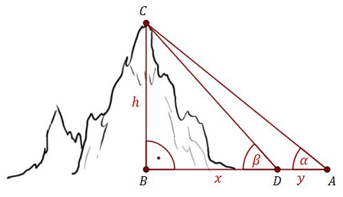

Jak zmierzyć wysokość góry mając do dyspozycji zwykłą miarkę i narzędzie do
mierzenia kątów?
Obliczenie wysokości góry jest znacznie trudniejsze od obliczenia
wysokości drzewa. Wynika to z tego, że góry zazwyczaj nie są pionowymi ścianami, co uniemożliwia
zmierzenie odległości \(AB\). 
Możemy jedynie zmierzyć dowolną odległość \(AD\) u podnóża góry oraz kąty \(\alpha \text{ i
}\beta \).
Dla uproszczenia rachunków wprowadźmy krótsze oznaczenia dla poszczególnych
odcinków.
Niech \(|AD|=y, |BD|=x, |BC|=h\) (tak jak na rysunku).
Nasze dane, to:
\(y, \alpha \text{ i } \beta\) (te wartości możemy zmierzyć).
Korzystając z
trójkąta \(ABC\) mamy: \[\begin{split}\frac{h}{x+y}&=\operatorname{tg}
\alpha\\[6pt]h&=(x+y)\operatorname{tg} \alpha \end{split}\] Korzystając z trójkąta \(DBC\)
mamy: \[\begin{split}\frac{h}{x}&=\operatorname{tg} \beta\\[6pt]h&=x\operatorname{tg} \beta
\end{split}\]
Zatem otrzymaliśmy dwa wzory na wysokość \(h\), które możemy teraz
porównać i otrzymamy równanie z którego wyliczymy niewiadomą \(x\).
\[\begin{split}x\operatorname{tg} \beta&=(x+y)\operatorname{tg} \alpha \\[6pt]x\operatorname{tg}
\beta&=x\operatorname{tg} \alpha +y\operatorname{tg} \alpha \\[6pt]x\operatorname{tg}
\beta-x\operatorname{tg} \alpha&=y\operatorname{tg} \alpha \\[6pt]x(\operatorname{tg} \beta
-\operatorname{tg} \alpha )&=y\operatorname{tg} \alpha \\[6pt]x&=\frac{y\operatorname{tg}
\alpha}{\operatorname{tg} \beta -\operatorname{tg} \alpha}\end{split}\] Korzystamy teraz ze
wzoru na wysokość \(h=x\operatorname{tg} \beta \) i otrzymujemy:
\[\begin{split}h&=x\operatorname{tg} \beta \\[6pt]h&=\frac{y\operatorname{tg}
\alpha}{\operatorname{tg} \beta -\operatorname{tg} \alpha}\cdot \operatorname{tg} \beta
\\[6pt]h&=\frac{y\operatorname{tg} \alpha \operatorname{tg} \beta }{\operatorname{tg} \beta
-\operatorname{tg} \alpha}\end{split}\] Jeśli nasze pomiary byłyby np. takie: \(y=120\text{
metrów, } \alpha =42^\circ \text{, }\beta =45^\circ \), to: \[h=\frac{y\operatorname{tg} \alpha
\operatorname{tg} \beta }{\operatorname{tg} \beta -\operatorname{tg}
\alpha}=\frac{120\operatorname{tg} 42^\circ \operatorname{tg} 45^\circ }{\operatorname{tg}
45^\circ -\operatorname{tg} 42^\circ }\simeq \frac{120\cdot 0{,}9 \cdot 1 }{1 -0{,}9
}=\frac{108}{0{,}1}=1080\] Czyli dla przyjętych danych wysokość góry wynosi w przybliżeniu 1080
metrów.